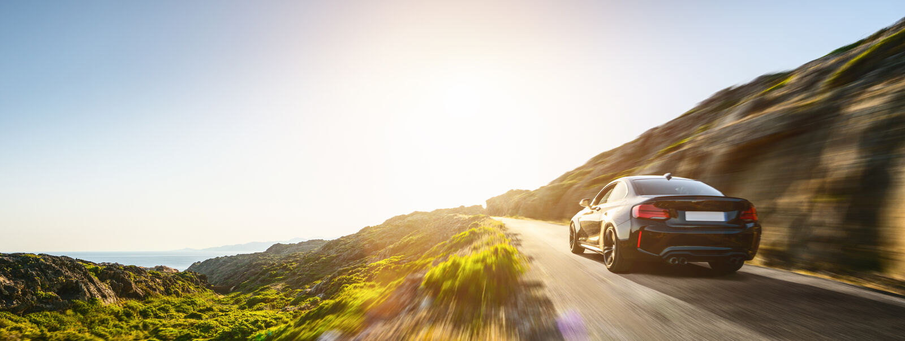
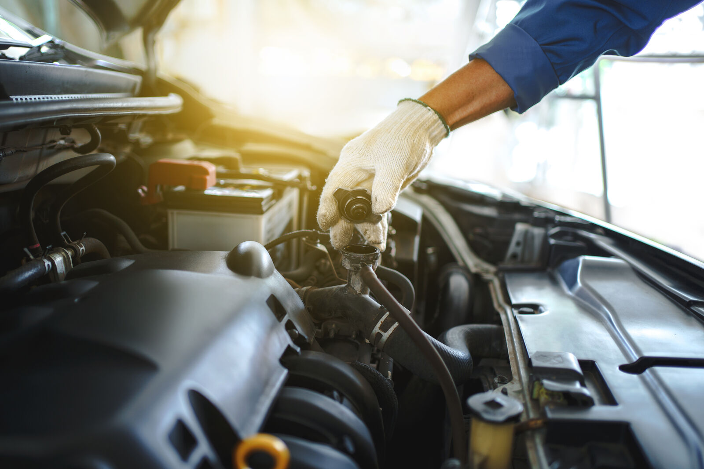
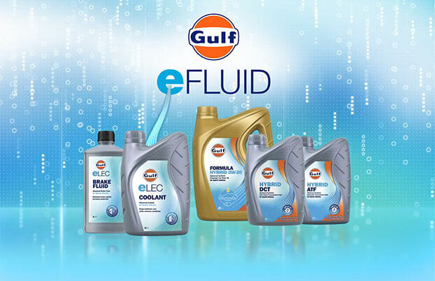
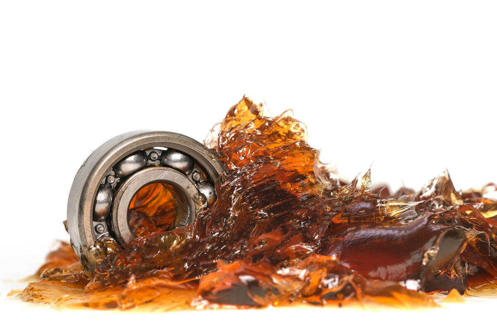
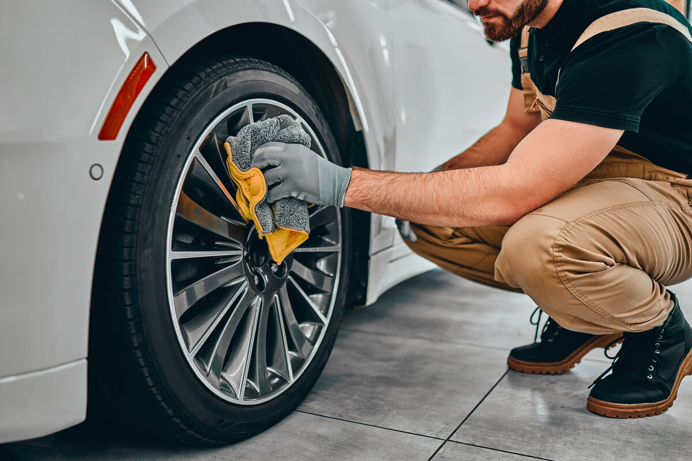

Върхова производителност всеки път, когато потеглите. Вече над 120 години отдадено се стремим към по-висока ефективност, производителност и икономичност за автомобили от всякакъв вид и размер. Смазочните ни материали за леки автомобили вървят още една крачка напред — създадени и разработени с експертните знания, на които ни се доверяват клиенти по цял свят.
За нас няма твърде далечна дестинация, твърде стръмно изкачване или непреодолима пречка. За всяко предизвикателство при смазването разработваме нови иновативни решения и правим всичко възможно автомобилът ви да поддържа неизменно висока производителност — за изключително плавно и по-безопасно шофиране всеки път.
Когато изберете Gulf, сте в отлична компания. Доверени от най-престижните автомобилни марки и състезателни отбори, чрез дългогодишни сътрудничества и над век опит сме изградили изключително дълбоко разбиране за предизвикателствата в индустрията и как да ги преодоляваме. Каквито и да са изискванията ви — от грижа за автомобила до моторно масло — можете да сте сигурни, че имаме продукт, който отговаря точно на нуждите ви.
Индустриалните организации също признават, че сте в най-сигурните ръце. Продуктите ни отговарят и надхвърлят изискванията на водещи организации като Американския петролен институт (API) и Асоциацията на европейските автомобилни производители (ACEA).

Каквото и да ви движи, накъдето и да сте се запътили — ние сме с вас. Формулирали сме моторните си масла така, че да осигуряват удължена защита срещу износване и отлагания, което гарантира по-голяма издръжливост на двигателя и по-нисък разход на гориво, с намалени емисии CO2 и защита на катализатора при избрани продукти. Моторните ни масла за леки автомобили работят при най-различни експлоатационни условия и ви държат на пътя във всеки климат.
Богатата ни гама от универсални моторни масла обхваща голямо разнообразие от марки и модели автомобили — както по-стари, така и по-нови, и различни обеми на двигателите — от мощни турбо бензинови до дизелови и бензинови двигатели.

Предлагаме превъзходно качество като стандарт — и за всяко предизвикателство на пътя имаме решение. Разнообразната ни гама от трансмисионни течности е достатъчно гъвкава, за да отговори и на най-взискателните приложения — от високи натоварвания и тежки климатични условия до трудни условия на шофиране.
Грижливо формулираните ни минерални и синтетични течности съдържат съвременни добавки, които осигуряват по-добра производителност и защита на автомобила ви във всеки момент. От изключително плавно превключване на предавките, по-нисък разход на гориво и надеждна защита от ръжда и корозия до по-дълъг живот, равномерно смазване и отлични фрикционни свойства — можете да преодолявате и най-трудните пътувания с пълна увереност. Същевременно отличната течливост при ниски температури и изключителната производителност при високи осигуряват надеждна защита, която се движи с вас.

По всяко време, навсякъде, при всякакво време. Насладете се на пълна увереност и спокойствие, които идват с оптималната производителност тогава, когато е най-важно. Спирачните ни течности, охладителни течности и антифриз изминават цялото разстояние и поддържат автомобила ви в оптимално състояние, където и да отидете и с каквито и предизвикателства да се сблъскате по пътя.
Доверени от клиенти по света заради по-голямата безопасност, високопроизводителните ни спирачни течности отиват една крачка по-далеч от повечето — с вградени добавки, които защитават самата спирачна система и осигуряват дълготрайна, надеждна производителност при всякакви условия на шофиране.
Притеснявате ли се за климатичния контрол? Формулите на Gulf за охладителни течности и антифриз гарантират, че двигателят ви поддържа оптимална температура и е защитен по всяко време — дори в най-горещите лета и най-студените зими — като предотвратяват престои и скъпи ремонти.

Насочени към бъдещето, готови за него. Новаторската ни гама E-Fluids е подходяща както за изцяло електрически автомобили, така и за хибриди. Специално разработени от експерти в индустрията, нашите E-Fluids осигуряват оптимална производителност, като същевременно намаляват емисиите CO2 и подобряват разхода на гориво — с по-добра защита и ефективност за вашия електромобил.

Когато става въпрос за производителност на двигателя, ние се занимаваме и с най-малките подробности. Колекцията ни от многоцелеви греси осигурява цялостна защита на 360° — от колесните лагери до компонентите на шасито, от сферичните шарнири до карданните шарнири, от валовете за отвличане на мощност до шкворените, от втулките до дисковите спирачки.
Възползвайте се от всеобхватната подкрепа на гресите на Gulf — включително превъзходна механична стабилност и товароносимост, които осигуряват дълъг живот, отлична защита от корозия и устойчивост на измиване от вода, както и отлична течливост при ниски температури дори в студено време и уплътняващи свойства, които предотвратяват замърсяване.

Няма нищо като усещането и вида на „новата кола“ — защо това изживяване да спира, щом напуснете автокъщата? Подобрете шофирането си отвътре и отвън с цялостната ни гама за грижа за автомобила — създадена за лесна употреба, по-приятни пътувания и отлично състояние на всеки аспект от автомобила ви.
Улеснихме грижата за автомобила повече от всякога с колекцията Gulf Car Care. Богатата ни гама продукти за грижа е грижливо разработена така, че да отговаря на всички марки, модели и покрития.
Нуждаете се от ежедневна подкрепа? Независимо дали са трохи и петна от кафе след сутрешното пътуване, или износване след лятно къмпинг пътешествие — имаме решение. Напръскайте и излъскайте, за да намалите упоритите прах и мръсотия, поддържайте чистотата със специализираната ни спирачна и съединителна течност или се насладете на усъвършенствана защита с иновативния ни спрей восък, обогатен с натурален карнаубски восък и пчелен восък. С лесно приложение и най-качествените съставки поддържането на автомобила ви в блестящо състояние никога не е било по-лесно.